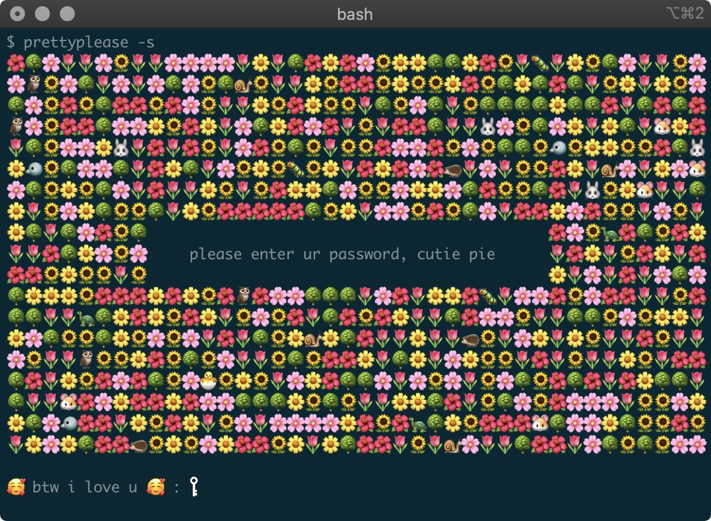

title: Building and Packaging Modern C++ class: wrapper <!-- , animation-fade --> layout: true --- class: wrapper, center, middle # {{title}} --- class: wrapper, center, middle # Adrian Ostrowski <img src="img/ao.jpg" style="width: 200px; height: 200px"/> <https://github.com/aostrowski> | <svg aria-hidden="true" focusable="false" data-prefix="fab" data-icon="twitter" class="svg-inline--fa fa-twitter fa-w-16" role="img" xmlns="http://www.w3.org/2000/svg" viewBox="0 0 512 512" height="1em"><path fill="currentColor" d="M459.37 151.716c.325 4.548.325 9.097.325 13.645 0 138.72-105.583 298.558-298.558 298.558-59.452 0-114.68-17.219-161.137-47.106 8.447.974 16.568 1.299 25.34 1.299 49.055 0 94.213-16.568 130.274-44.832-46.132-.975-84.792-31.188-98.112-72.772 6.498.974 12.995 1.624 19.818 1.624 9.421 0 18.843-1.3 27.614-3.573-48.081-9.747-84.143-51.98-84.143-102.985v-1.299c13.969 7.797 30.214 12.67 47.431 13.319-28.264-18.843-46.781-51.005-46.781-87.391 0-19.492 5.197-37.36 14.294-52.954 51.655 63.675 129.3 105.258 216.365 109.807-1.624-7.797-2.599-15.918-2.599-24.04 0-57.828 46.782-104.934 104.934-104.934 30.213 0 57.502 12.67 76.67 33.137 23.715-4.548 46.456-13.32 66.599-25.34-7.798 24.366-24.366 44.833-46.132 57.827 21.117-2.273 41.584-8.122 60.426-16.243-14.292 20.791-32.161 39.308-52.628 54.253z"></path></svg>[@adr_ostrowski](https://twitter.com/adr_ostrowski) <http://aostrowski.github.io> --- class: wrapper, center, middle # Piotr Gaczkowski  <https://github.com/DoomHammer> | <svg aria-hidden="true" focusable="false" data-prefix="fab" data-icon="twitter" class="svg-inline--fa fa-twitter fa-w-16" role="img" xmlns="http://www.w3.org/2000/svg" viewBox="0 0 512 512" height="1em"><path fill="currentColor" d="M459.37 151.716c.325 4.548.325 9.097.325 13.645 0 138.72-105.583 298.558-298.558 298.558-59.452 0-114.68-17.219-161.137-47.106 8.447.974 16.568 1.299 25.34 1.299 49.055 0 94.213-16.568 130.274-44.832-46.132-.975-84.792-31.188-98.112-72.772 6.498.974 12.995 1.624 19.818 1.624 9.421 0 18.843-1.3 27.614-3.573-48.081-9.747-84.143-51.98-84.143-102.985v-1.299c13.969 7.797 30.214 12.67 47.431 13.319-28.264-18.843-46.781-51.005-46.781-87.391 0-19.492 5.197-37.36 14.294-52.954 51.655 63.675 129.3 105.258 216.365 109.807-1.624-7.797-2.599-15.918-2.599-24.04 0-57.828 46.782-104.934 104.934-104.934 30.213 0 57.502 12.67 76.67 33.137 23.715-4.548 46.456-13.32 66.599-25.34-7.798 24.366-24.366 44.833-46.132 57.827 21.117-2.273 41.584-8.122 60.426-16.243-14.292 20.791-32.161 39.308-52.628 54.253z"></path></svg> [@doomhammerng](https://twitter.com/doomhammerng) <https://doomhammer.info> --- background-image: url(img/samuel-regan-asante-g9A2llpDObU-unsplash.jpg) --- class: wrapper, center, middle # Speeding up Builds --- class: wrapper, center, middle # CCache https://ccache.dev/ ??? In essence: compiler cache --- class: twitter # CCache - features - much faster recompilation ??? - supports C, C++, Objective-C, Objective-C++, CUDA & assembly -- - compression -- - statistics ??? - low overhead - checksums for correctness since 4.0 -- - silent fallback in unsupported cases -- - easy integration -- - support for C++20's modules ??? - modules - doc mentions Clang only; require settings a few options --- class: twitter # CCache - supported environment - works on Linux and macOS, other Unixes, and Windows - supports GCC, Clang and NVCC - MSVC support underway (PR [#506](https://github.com/ccache/ccache/pull/506)) --- exclude: true class: twitter # CCache - usage ``` ccache [flag] ccache [[compiler] [flags ...]] compiler [flags ...] ``` ??? First: for managing ccache itself, e.g. stats 2 & 3: for compiling -- exclude: true or via build systems --- class: twitter # CCache - installation - Windows: - just use binaries from GitHub - Others: - system package manager - usually not the latest version - `brew install ccache` - build from sources (CMake) --- class: wrapper, center, middle # Intermission: Brew  <!-- TODO: can we use this image legally-speaking? --> https://brew.sh/ ??? Package manager for macOS and Linux Why use it? - all files installed in one subtree - clean removal if needed - plethora of packages in recent versions - Snap has old and unofficial CCache (3.7 vs brew's 4.2) Scoop for Windows Python has C++ software too, e. g. CMake (`pip install cmake`) --- class: twitter # CCache - usage - invoke manually ``` ccache <compiler> <compiler_args> ``` -- - invoke via symbolic links masquerading the compilers ??? masqerading: we'll show that in a sec -- - integrate with build systems --- class: twitter # CCache - masquerading compilers To ensure CCache is used by default: -- 1. Run: ``` cp ccache /usr/local/bin/ ln -s ccache /usr/local/bin/gcc ln -s ccache /usr/local/bin/g++ ln -s ccache /usr/local/bin/cc ln -s ccache /usr/local/bin/c++ ``` ??? When invoked, ccache deduces orig. compiler from $0 -- 2. Put `/usr/local/bin` early in `PATH` --- class: twitter # CCache - configuration - many environment variables - corresponding settings in `ccache.conf` ??? In most cases defaults work well. --- class: twitter # CCache - configuration, cont'd - cache size and location - behavior: `sloppiness`, preprocessing, etc. - compiler specific, e. g. `prefix_command` - read only mode - debugging and logging ??? Cache size - one thing worth increasing. Sloppiness: - pretty strict by default -> less false hits - allows to use ctimes/mtimes instead of file contents - needed for modules and precompiled headers --- class: twitter # CCache - integrating with CMake Available since CMake 3.4 -- ``` -DCMAKE_CXX_COMPILER_LAUNCHER=ccache ``` -- ``` find_program(CCACHE_PROGRAM ccache) if(CCACHE_PROGRAM) set_property(GLOBAL PROPERTY RULE_LAUNCH_COMPILE "${CCACHE_PROGRAM}") endif() ``` ??? RULE_LAUNCH_LINK - no use, CCache doesn't support linking --- class: twitter # CCache - sharing cache - possible on same machine and using a network storage -- - for locations afar, consider providing their own caches -- - users need to be in same group -- - in config, provide: ``` cache_size = 100G base_dir = /home/current/user/ cache_dir = /network/storage/path hash_dir = false temporary_dir = /some/local/dir/like/tmp umask = 002 ``` ??? - `base_dir` - allows different users to share cache - `hash_dir` - paths in debug symbols - `temporary_dir` - faster + helps avoid some bugs - To share between OS-es: set `sloppiness` to `system_headers` --- class: twitter # How much does it help? A lot! Personal experience: builds shorter by up to 95% --- # How much does it help - cont'd  ??? - Preprocessor - first run preprocessor, then hash results - Direct - hash source file and include files directly. If miss, goto preprocessor. - Depend - like direct, but doesn't goto preproc. on miss. - depends on compiler's `-MD` or `-MMD` - Great for dist. builds (reduce local overhead) --- class: wrapper, center, middle # What else a developer needs? --- background-image: url(img/lama-roscu-Wpg3Qm0zaGk-unsplash.jpg) --- class: wrapper, center, middle # Icecream https://github.com/icecc/icecream ??? fork of distcc - with a central server that chooses fastest free server --- class: twitter # Icecream - features - scheduler -- - only uses free resources on machines -- - allows good perf on heterogeneous environments -- - allows some machines to be off during compilation -- - remote cross compiling ??? Automatically sends toolchain to remote -- - monitoring --- exclude: true class: twitter # Monitoring - Icemon https://github.com/icecc/icemon --- class: twitter # Monitoring - Sundae https://github.com/JPEWdev/icecream-sundae --- # Monitoring - Sundae - cont'd  ??? % - local job = - remote job --- class: twitter # Icecream - supported environments - Linux - macOS - FreeBSD - Cygwin No native Windows :( --- background-image: url(img/icecream.jpg) --- class: twitter # Icecream - installation - developers recommend using distro's package - `sudo apt install icecc` - `sudo apt install icecc-scheduler` - `sudo apt install icecream-sundae` ??? - `icecc` has client and daemon (both required for remote builds) - scheduler - on one host only (two possible, automatic fallback) - sundae - optional --- class: twitter # Icecream - configuration - firewall - TCP: 10245, 8765, 8766 - UDP: 8765 - other defaults should work fine - persistent connections: - `--scheduler-host` for daemon - `--persistent-client-connection` for scheduler ??? - icecc must be in your path - that's all. - Network should be fast. Avoid far away nodes. - Scheduler should have dedicated resources - sensitive to latency. --- class: twitter # Icecream - configuration, cont'd To ensure Icecream is always used by default, put ``` /usr/lib/icecc/bin ``` early in your `PATH`. --- class: twitter # Icecream - integrating with CMake ``` find_program(ICECC_PROGRAM icecc) if(ICECC_PROGRAM) set_property(GLOBAL PROPERTY RULE_LAUNCH_COMPILE "${ICECC_PROGRAM}") endif() ``` --- class: twitter # Combining CCache and Icecream - Your `ccache.conf` file must contain: ``` prefix_command=icecc ``` -- - CCache should come before IceCC in `PATH` --- class: twitter # How much does it help?  ??? - Many cases show at least 20% faster builds - More responsive local machine https://bugzilla.mozilla.org/show_bug.cgi?id=927952 --- class: wrapper, center, middle # Noteworthy alternatives --- class: twitter # IncrediBuild - distributed building for Windows and Linux - commercial https://www.incredibuild.com/ --- class: twitter # `sccache` - Mozilla's `ccache`-like compiler cache - built-in `icecream`-style distributed compilation - supports C, C++, Rust, and NVCC - on Windows, Linux and macOS Not production ready yet (current version: 0.2.15) https://github.com/mozilla/sccache --- class: twitter exclude: true # Bazel https://bazel.build/ --- class: twitter exclude: true # C++20's Modules TODO --- class: wrapper, center, middle # Portable build environments --- class: twitter # Portable build environments How to make sure everyone's playing with the same toys? --- class: twitter # VMs -- - All the software preinstalled -- - Easy distribution -- - May be less than pleasant to use --- class: twitter # Containers -- - Oooh, shiny! -- - Slicker than VMs! -- - Application containers and toolchains don't match --- class: twitter # What else? --- class: twitter # Nix features - Operates in userland - Deterministic packages and environments - Atomic upgrades - Rollbacks - Build environment management - Multiple versions of packages side-by-side on a single system - Runs on Linux and macOS --- class: twitter # Functional approach - Installing or upgrading package won't break other packages - Every package is installed in a separate directory - It allows easy rollback - Prevents inconsistent state --- class: twitter # Good for multi-user environments - Several users can install packages without superuser privileges - Different users can have different package versions --- class: twitter # Projects with direnv Uses `nix-shell`. Automatically sets up development environment whenever you enter a directory. You can pin the packages version. --- .envrc ```bash use_nix . env/bin/activate ``` default.nix ```nix { pkgs ? import <nixpkgs> {} }: with pkgs; let gcc = gcc10; in mkShell { buildInputs = [ cmake ccache gcc git gnumake icecream ]; } ``` --- class: twitter # How does it compare to the rest? - Still not as easy as Homebrew - GNU Guix using GNU Scheme (LISP) - ... if you love parentheses, you'll love GUIX! - ... also works with direnv! --- class: twitter # Managing Git hooks -- - There's an app for that! -- - pre-commit --- class: twitter # pre-commit ``` repos: - repo: https://github.com/pre-commit/pre-commit-hooks rev: v2.5.0 hooks: - id: check-added-large-files - id: check-byte-order-marker - id: check-case-conflict - id: check-merge-conflict - id: mixed-line-ending - id: no-commit-to-branch args: [--branch, master] - id: trailing-whitespace ``` --- class: twitter # pre-commit ``` #[...] - repo: https://github.com/pocc/pre-commit-hooks rev: v1.1.0 hooks: - id: clang-format args: [--style=Google, -i] exclude: 3rd-parties/ - repo: https://github.com/iconmaster5326/cmake-format-pre-commit-hook rev: v0.6.9 hooks: - id: cmake-format exclude: 3rd-parties/ ``` --- class: wrapper, center, middle # Packaging --- class: wrapper, center, middle # Conan ??? - a barbarian friend - may not let us have his axe - still helpful --- class: twitter # Conan - Package manager for C++ -- - Written in Python -- - Like pip/npm/gem but with full toolchain support -- - Uses binaries where possible --- class: twitter # Conanfile - specifying dependencies ``` [requires] flac/1.3.3 spdlog/[>=1.4.1] [options] cpprestsdk:shared=True [generators] CMakeDeps CMakeToolchain ``` --- class: twitter # CMake integration ``` list(APPEND CMAKE_PREFIX_PATH "${CMAKE_BINARY_DIR}") find_package(cpprestsdk CONFIG REQUIRED) target_link_libraries(client PUBLIC cpprestsdk::cpprest) ``` --- class: twitter # Consuming packages using Conan - packages can be consumed in many different build systems - easy to add your own - transparent CMake integration - `cmake_find_package` - `CMakeDeps` --- # Packaging using Conan - helpers for common build systems - Conan recipes can package code from other repos -- - if CMake package supports installation: ```python def package_info(self): self.cpp_info.libs = ["my_lib"] def package(self): cmake = CMake(self) cmake.configure() cmake.install() ``` --- class: twitter # Packaging using Conan, cont'd ```python def package(self): ... self.run("autoconf", run_environment=True) self._autotools = AutoToolsBuildEnvironment(self) self._autotools.make() ... self._autotools.install() ... ``` ??? - `self.run` can run git clone, esoteric build commands etc - `package()` then copies the result --- class: twitter # Taming rebelous packages with Conan - when all else fails, there's `self.run` and `self.copy` ```python self.copy('LICENSE', dst='licenses', src=self._source_folder) ``` -- ```python self.run('nmake install DESTROOT=%s' % self.package_folder) ``` -- ```python def package_info(self): self.cpp_info.libs = tools.collect_libs(self) if not self.options.shared: self.cpp_info.defines = ["__PTW32_STATIC_LIB"] ``` ??? - `package_info()` specifies produced libraries, dirs and flags --- class: wrapper, center, middle # Toolchains --- class: twitter # CMake toolchains - `CMAKE_TOOLCHAIN_FILE` ??? - CMake will detect toolchain for host - use this if you want to specify another one -- specifies: - compilers - paths for build tools, libraries, etc. - platform-specific info -- - can be used to easier specify another compiler for host environment --- class: twitter # Conan profiles ```ini [settings] os=Linux distro=RHEL6 arch=armv7 arch_build=x86_64 compiler=clang compiler.version=11.0 compiler.libcxx=libc++ build_type=Release [options] [env] ``` ??? - can be used for cross compiling too - can target specific Linux distros - can setup env vars which build system will use --- class: twitter # Conan toolchains - build system specific toolchain generators - CMakeToolchain for CMake - can be combined with CMakeDeps - produces a toolchain file for CMake ```bash cmake <src_dir> -DCMAKE_TOOLCHAIN_FILE=conan_toolchain.cmake ``` ??? - doesn't contain all required settings yet :( - fortunately Conan describes how to cross-compile in [containers](https://docs.conan.io/en/latest/howtos/run_conan_in_docker.html) --- class: twitter # CPack -- - Generates sources and binary packages -- - Could spit out NSIS installers and macOS dmg archives -- - Produces Deb and RPM on supported platforms --- class: twitter # AppImage / Flatpack - The new way to package portable Linux apps ---  --- class: center, middle, split50 # Hungry for more? .left-pane[ <img src="img/book_cover.jpg" style="width: auto; height: 400px"/> ] .right-pane[ .left[ Our brand new book is coming out! Featuring: - More on building and packaging - Designing quality software - Leveraging C++20 features - Microservices and cloud-native C++ Available from April 23rd on [Packt](https://www.packtpub.com/product/software-architecture-with-c/9781838554590) and [Amazon](https://www.amazon.com/gp/aw/d/1838554599/) ] ] --- class: wrapper, center, middle # Questions? --- class: wrapper, center, middle # Thank you! <img src="img/ao.jpg" style="width: 200px; height: 200px"/> <https://github.com/aostrowski> | <svg aria-hidden="true" focusable="false" data-prefix="fab" data-icon="twitter" class="svg-inline--fa fa-twitter fa-w-16" role="img" xmlns="http://www.w3.org/2000/svg" viewBox="0 0 512 512" height="1em"><path fill="currentColor" d="M459.37 151.716c.325 4.548.325 9.097.325 13.645 0 138.72-105.583 298.558-298.558 298.558-59.452 0-114.68-17.219-161.137-47.106 8.447.974 16.568 1.299 25.34 1.299 49.055 0 94.213-16.568 130.274-44.832-46.132-.975-84.792-31.188-98.112-72.772 6.498.974 12.995 1.624 19.818 1.624 9.421 0 18.843-1.3 27.614-3.573-48.081-9.747-84.143-51.98-84.143-102.985v-1.299c13.969 7.797 30.214 12.67 47.431 13.319-28.264-18.843-46.781-51.005-46.781-87.391 0-19.492 5.197-37.36 14.294-52.954 51.655 63.675 129.3 105.258 216.365 109.807-1.624-7.797-2.599-15.918-2.599-24.04 0-57.828 46.782-104.934 104.934-104.934 30.213 0 57.502 12.67 76.67 33.137 23.715-4.548 46.456-13.32 66.599-25.34-7.798 24.366-24.366 44.833-46.132 57.827 21.117-2.273 41.584-8.122 60.426-16.243-14.292 20.791-32.161 39.308-52.628 54.253z"></path></svg>[@adr_ostrowski](https://twitter.com/adr_ostrowski) <http://aostrowski.github.io> --- # Attributions - _Building Site_ photo by <a href="https://unsplash.com/@fkaregan?utm_source=unsplash&utm_medium=referral&utm_content=creditCopyText">Samuel Regan-Asante</a> on <a href="https://unsplash.com/?utm_source=unsplash&utm_medium=referral&utm_content=creditCopyText">Unsplash</a> - _Icecream rainbow_ photo by <a href="https://unsplash.com/@lamaroscu?utm_source=unsplash&utm_medium=referral&utm_content=creditCopyText">Lama Roscu</a> on <a href="https://unsplash.com/s/photos/icecream?utm_source=unsplash&utm_medium=referral&utm_content=creditCopyText">Unsplash</a> - Sundae image by <a href="https://pixabay.com/users/blende12-201217/?utm_source=link-attribution&utm_medium=referral&utm_campaign=image&utm_content=2300531">Gerhard G.</a> from <a href="https://pixabay.com/?utm_source=link-attribution&utm_medium=referral&utm_campaign=image&utm_content=2300531">Pixabay</a>